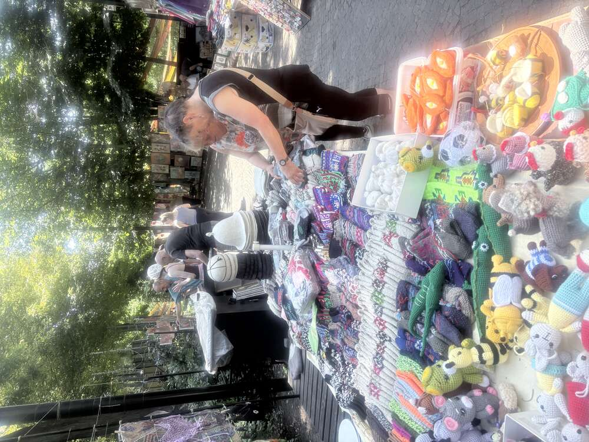
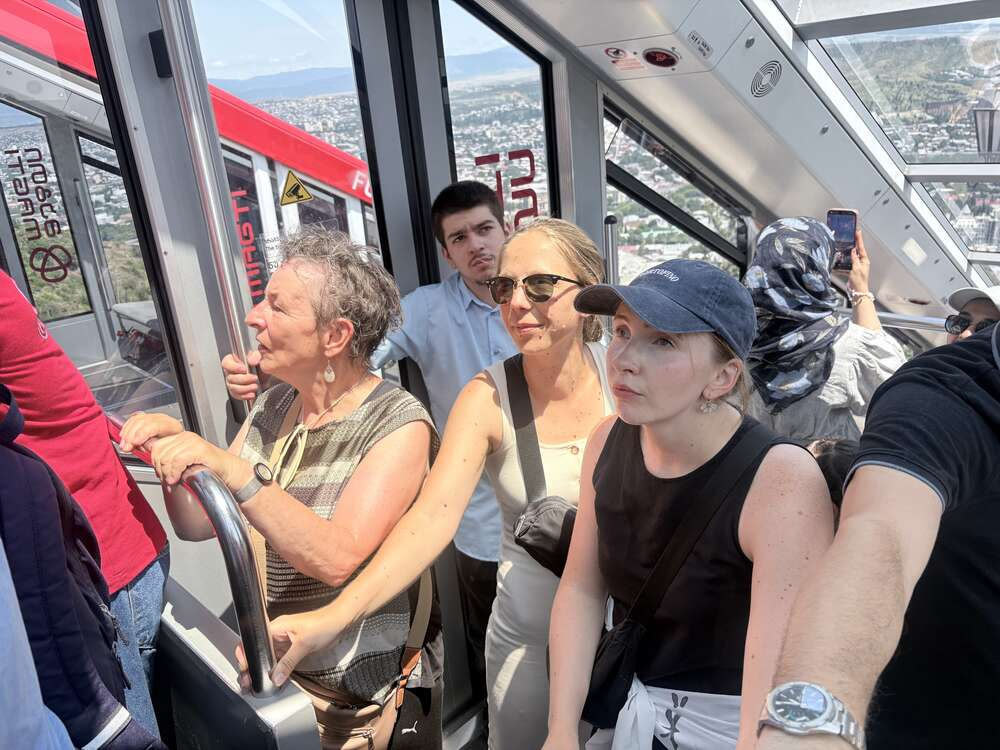
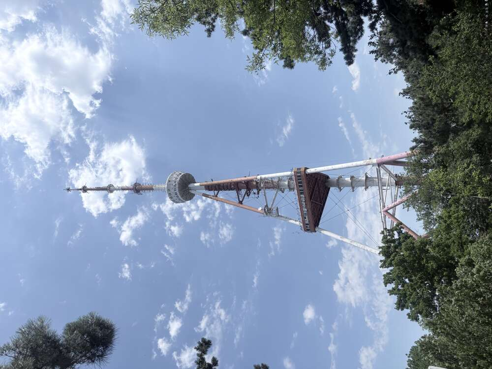
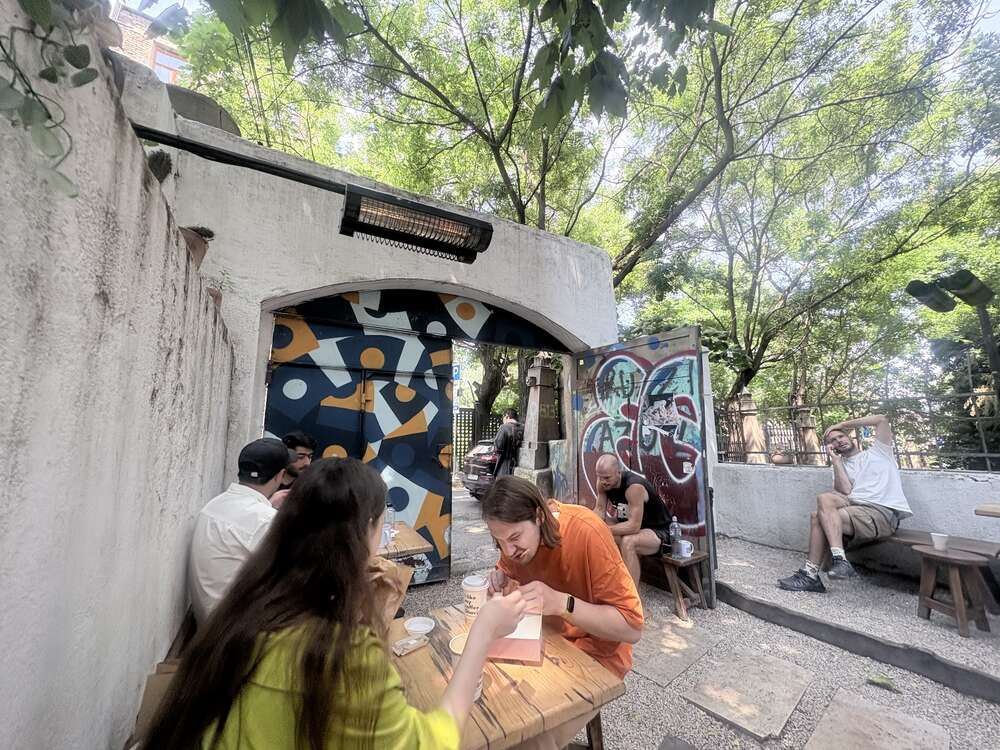
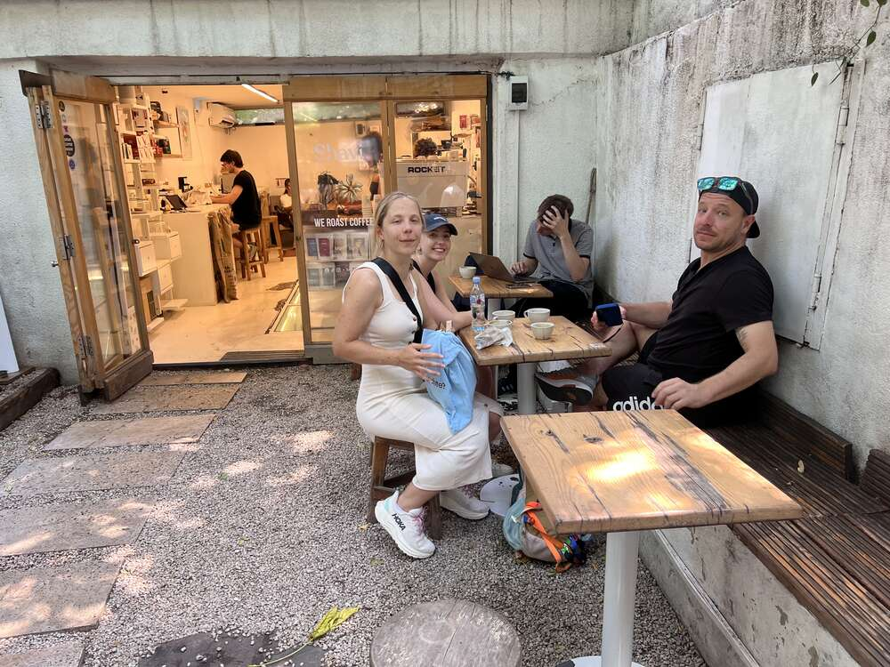
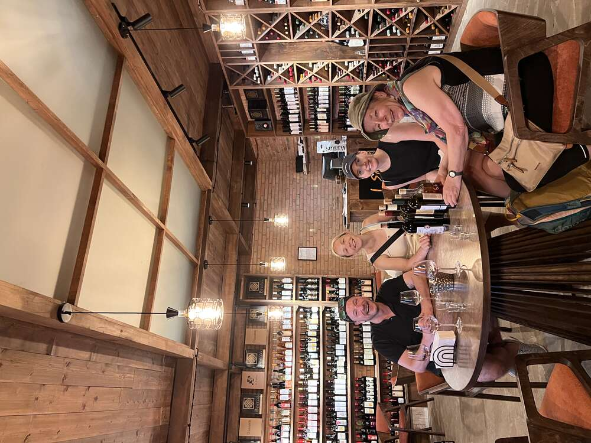
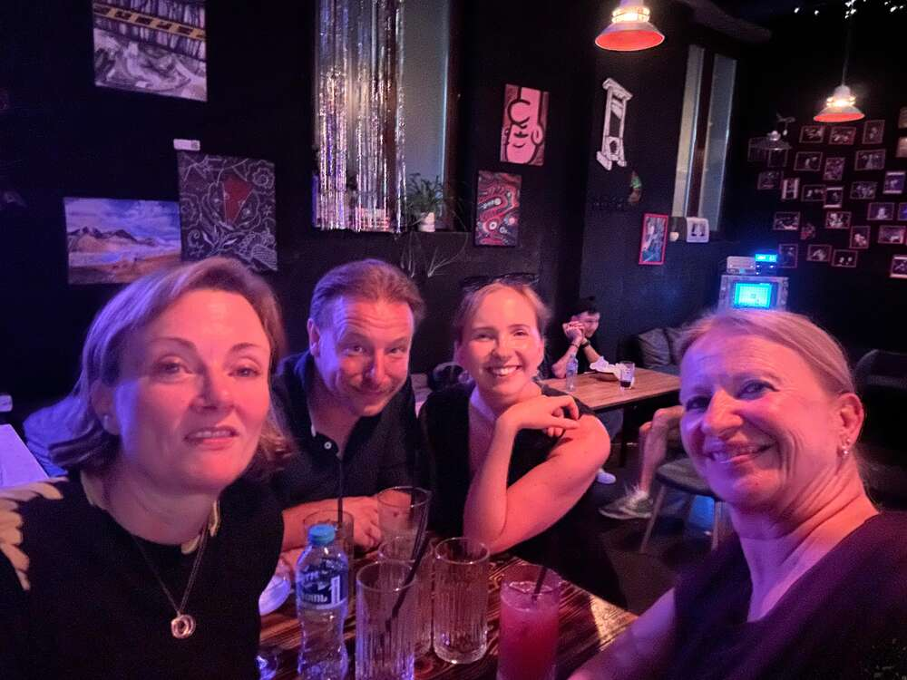

Last full day of the trip: the flea market at the Dry Bridge, the funicular up Mtatsminda, coffee, a wine tasting and one last evening together in Tbilisi.
Dry Bridge Market: Tbilisi’s best-known flea market, named after a historic bridge over a riverbed that dried up long ago. It emerged in the chaotic 1990s, when many Georgians, after the collapse of the Soviet Union, were forced to sell heirlooms, medals and personal belongings just to get by. Out of that hardship grew a sprawling market that is now open daily (except when it rains) – an open-air museum of Soviet nostalgia, handicrafts, and antiques both genuine and not so genuine.

A stall with knitted socks, felt hats and crocheted animal figures – handicrafts like these form the market’s second big theme alongside the Soviet memorabilia.

A delivery van crammed to the roof with vases, icons, candlesticks and curiosities – a rolling antique shop in the middle of the market. A word of caution that circulates among travelers to Georgia: not everything “Soviet” here is actually old – some of the goods are now reproduced specifically for the market.
Mtatsminda (“Holy Mountain”): At 770 meters the highest point in Tbilisi, named in reference to Mount Athos. A funicular has run to the top since 1905 – at the time a Belgian-French-Polish joint venture, financed by a Belgian consortium that received a 45-year operating concession in return. After a serious accident in 2000, in which a cable snapped and a car carrying Japanese tourists crashed back into the lower station, the funicular was out of service for 12 years; it has been running again since 2013, with an intermediate stop at the Pantheon of Georgian writers and statesmen (where, incidentally, Stalin’s mother is buried).

Packed tightly into the funicular car during the roughly three-minute ride on a gradient of 28 to 33 degrees – below, Tbilisi spreads out in the afternoon sun.

The 274.5-meter TV tower from 1972, occasionally called the “Eiffel Tower of Tbilisi” for its striking silhouette – closed to visitors since a fire in 2004, but elaborately lit at night and visible from practically every point in the city.

A hidden backyard with brightly painted gates, graffiti and improvised wooden benches – typical of the informal café culture away from the old town’s tourist trails.

“Shavi” (Georgian for “black”) – a small specialty roastery, emblematic of the young, internationally minded café scene that has taken hold in Tbilisi in recent years.

To finish, Georgian drinking culture in full regalia one more time: a white papakha fur hat, several open bottles and a silver-mounted drinking horn (kantsi) – traditionally emptied in one go, since its pointed shape means it cannot be set down without spilling the contents.

One last wine tasting together in a specialty shop with shelves full of Georgian wines from every growing region – a fitting finale after eight days among khachkars, monasteries and qvevri cellars.

The group’s last evening together in one of the many small, dark and cozy bars of Tbilisi – after eight days in Armenia and Georgia, a fitting way to end.